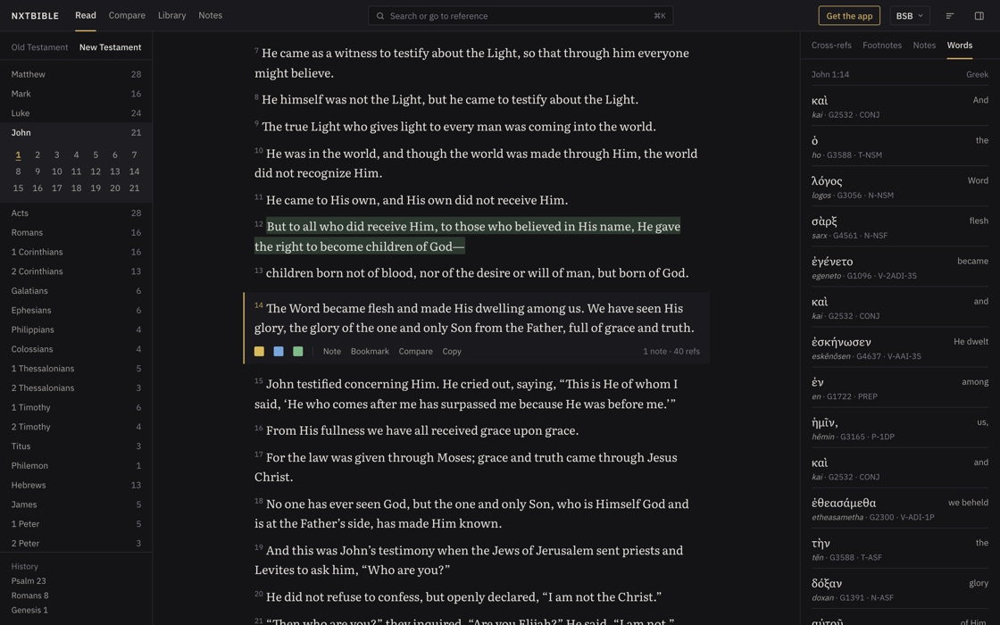
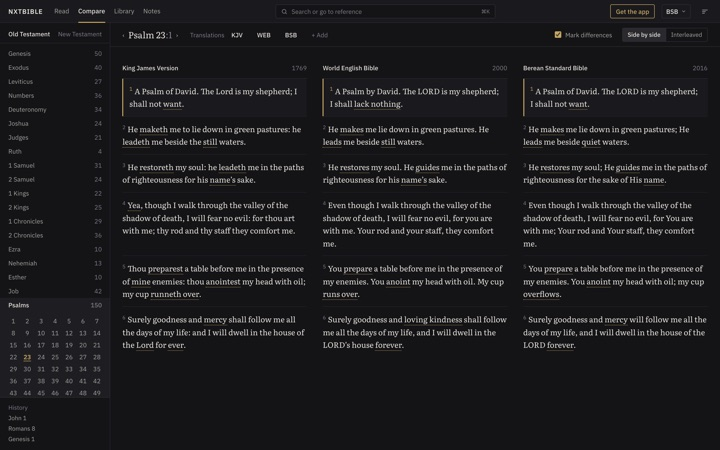
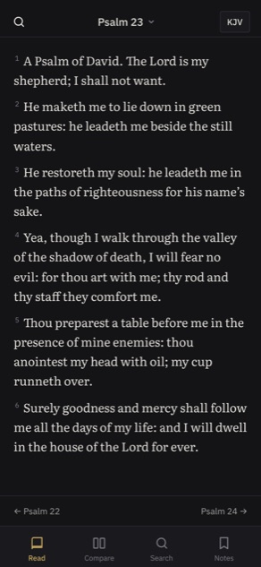

Read without distraction
Clean, book-quality type, adjustable text size and line width, and a sidebar that remembers where you have been.
Free · No account · Mac, Windows, Linux and the web
Read, compare and study Scripture in a calm, fast app. Five translations, 338,557 cross-references and the Greek and Hebrew behind every verse, in your browser or offline on your computer.
Free for Mac, Windows and Linux

Built for reading first, with the study tools one click away instead of in the way.
Clean, book-quality type, adjustable text size and line width, and a sidebar that remembers where you have been.
Line translations up side by side or verse by verse. Words that differ are underlined, so every change stands out.
Every verse links to related passages from OpenBible.info, ranked by readers' votes, with the text right there.
See the original words of each verse with transliteration, Strong's numbers, grammar and a full lexicon entry.
Type “jn 3 16” or “ps 23” to go straight there, or search the whole Bible, with quotes for an exact phrase.
Highlight in colour, write notes on any verse, bookmark what matters and export it all as Markdown.


The web version has the same reading and study tools. The desktop app adds what a browser can't promise: it works anywhere, and your notes are safely yours.
All in the public domain and all available offline in the desktop app.
In the desktop app, choose File › Add Translation… to import another translation from a MyBible module (.SQLite3). Imported translations stay on your computer.
Free for Mac, Windows and Linux.
For Macs with Apple silicon (M1 or later). Signed and notarized by Apple, so it opens with a double-click.
Download for MacFor 64-bit Windows 10 or 11. If SmartScreen warns about the installer, choose More info › Run anyway.
Download for WindowsAn AppImage for 64-bit Linux. Make it executable, run it, and it keeps itself up to date.
Download for LinuxYes. nxtbible is free to download and to use in the browser, with no account, ads or subscription. The included translations are in the public domain.
The desktop app works fully offline: every translation, cross-reference and lexicon entry is stored on your computer. The web version needs an internet connection.
In the desktop app, notes, highlights and bookmarks are saved to a file on your computer. In the browser they are kept in that browser's site storage, which is erased if you clear your browsing data and can be removed by the browser itself, so export them regularly or use the desktop app.
The King James Version (KJV), World English Bible (WEB) with footnotes, American Standard Version (ASV), Berean Standard Bible (BSB) and Young's Literal Translation (YLT). The desktop app can also import other translations from MyBible modules.
Yes. The web version has a layout made for phones, and you can add it to your home screen. The downloadable app is for Mac, Windows and Linux.
nxtbible has no accounts and no analytics. Your notes stay on your device and are never uploaded. The desktop app only goes online to check for updates.
nxtbible is designed, built and maintained by Tymofii Matviiv (@0xt1m). It's free, with no ads and no tracking, and it stays that way thanks to the people who support it.
If nxtbible helps your reading, a coffee goes a long way toward new features and translations.